Projects
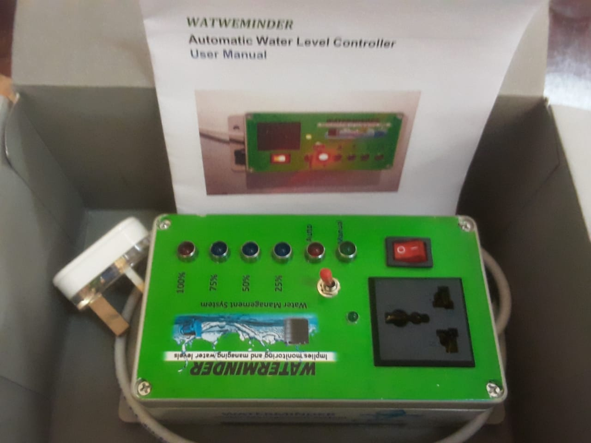
Water Minder
2023Water Minder is a water level monitoring system that I personally designed and developed to provide a simple, reliable, and practical method of monitoring the amount of water available in a tank or container.
Read more
Water Minder is a water level monitoring system that I personally designed and developed to provide a simple, reliable, and practical method of monitoring the amount of water available in a tank or container. The main objective of this project is to identify the water level electronically and provide a clear indication to the user, reducing the need to manually inspect the tank. The system is developed using water-level sensors, electronic components, a control circuit, and an embedded control system**. The sensing section detects the presence of water at different levels, while the control circuit processes the sensor signals and provides the corresponding level indication. This allows the user to easily identify whether the water level is low, medium, or high depending on the implemented sensing arrangement. I designed and developed the project by focusing on the practical integration of **electronics, sensors, embedded systems, circuit design, and automation concepts**. During the development process, I worked on sensor placement, circuit connections, signal detection, level indication, testing, and troubleshooting to ensure that the system responds correctly to changes in the water level. The Water Minder project demonstrates my ability to convert a simple real-world requirement into a functional electronic system. It also provided valuable hands-on experience in developing sensor-based monitoring applications and understanding how hardware and control systems can work together. The system can be further improved by integrating features such as automatic water pump control, LCD or LED level indicators, buzzer alerts, mobile notifications, IoT connectivity, and remote water-level monitoring. These enhancements could make the system suitable for domestic water tanks, agricultural applications, and other water management environments.
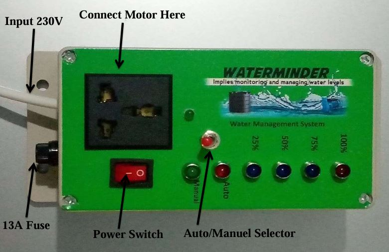
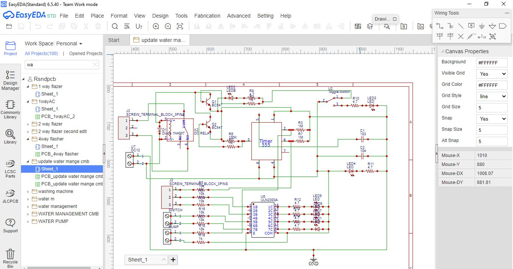

Smart Energy Meter
2025Smart Energy Meter is an electronic energy monitoring project that I personally designed and developed to measure and monitor electrical energy consumption in a practical and user-friendly manner.
Read more
Smart Energy Meter is an electronic energy monitoring project that I personally designed and developed to measure and monitor electrical energy consumption in a practical and user-friendly manner. The main objective of this project is to provide useful information about electrical power usage and help users understand and manage their energy consumption more effectively. The system is designed by combining voltage sensing, current sensing, signal processing, embedded systems, and electronic circuit design**. Voltage and current measurements are obtained from the electrical supply and processed by the control system to determine important electrical parameters such as voltage, current, power, and energy consumption. The measured values can then be displayed or monitored through the designed interface, allowing the user to observe the electrical characteristics of the connected load. I personally worked on the design and development of the project, including the electronic circuit, sensing section, controller integration, programming, testing, and troubleshooting. Developing this project helped me gain practical experience in **AC voltage and current measurement, sensor interfacing, microcontroller-based systems, electrical power calculations, embedded programming, and hardware integration**. The Smart Energy Meter demonstrates how embedded technology and electronics can be applied to a real-world energy management problem. It can be useful for monitoring household appliances, office equipment, workshops, and other electrical loads. The system can also be further developed by adding LCD or graphical displays, data logging, Wi-Fi/IoT connectivity, mobile applications, cloud-based monitoring, energy consumption history, overload detection, and real-time notifications**. These additional features can transform the project into a more advanced smart energy management and monitoring system.
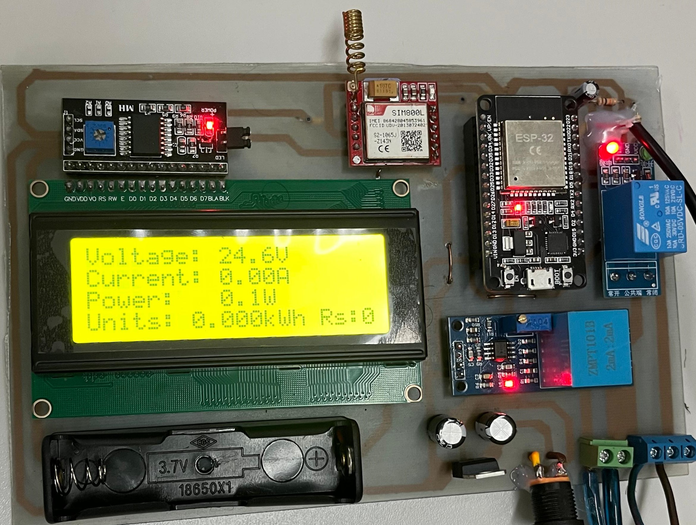
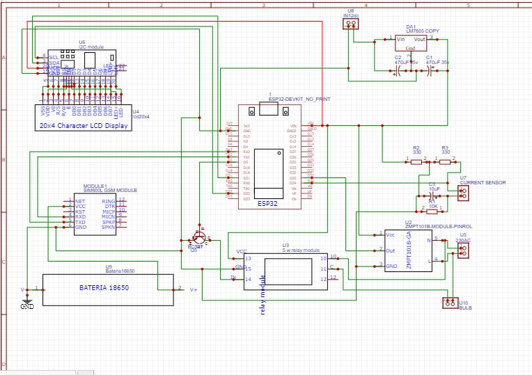
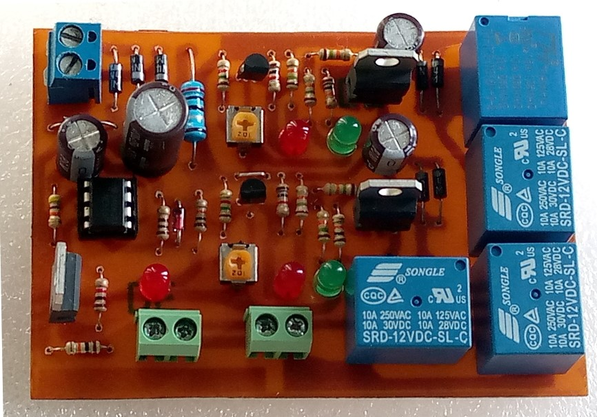
Over Voltage / Under Voltage Stabilizer
2024Over Voltage / Under Voltage Stabilizer is a protection and voltage regulation system that I personally designed and developed to protect electrical and electronic equipment from abnormal supply voltage conditions.
Read more
Over Voltage / Under Voltage Stabilizer is a protection and voltage regulation system that I personally designed and developed to protect electrical and electronic equipment from abnormal supply voltage conditions. The main purpose of this project is to monitor the incoming AC supply voltage and maintain a safer operating voltage for connected loads by responding to over-voltage and under-voltage conditions. The system continuously monitors the input voltage using a sensing and control circuit. When the supply voltage goes above or below the predefined safe operating range, the control circuit responds accordingly to protect the connected equipment. When the voltage returns to an acceptable range, the system can restore the output supply based on the designed control logic. This provides an additional level of protection against unstable or fluctuating electrical supplies. I personally worked on the circuit design, voltage sensing section, control logic, relay switching, component selection, assembly, testing, and troubleshooting** of the system. Through this project, I gained practical experience in **AC voltage monitoring, electronic protection circuits, relay-based switching, control systems, power electronics, and hardware testing**. This project demonstrates my ability to design practical electronic systems for real-world electrical problems. It can be applied to protect equipment such as computers, televisions, refrigerators, laboratory equipment, communication devices, and other sensitive electronic systems from unsuitable supply voltage conditions. The system can be further enhanced with features such as digital voltage display, adjustable voltage limits, automatic delay protection, overload protection, surge protection, fault indicators, data logging, and IoT-based remote monitoring**, making it a more advanced smart voltage protection and stabilization system.
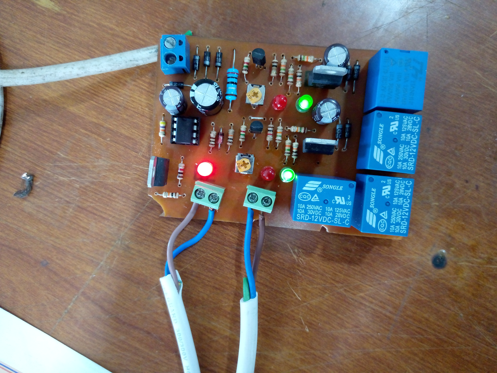
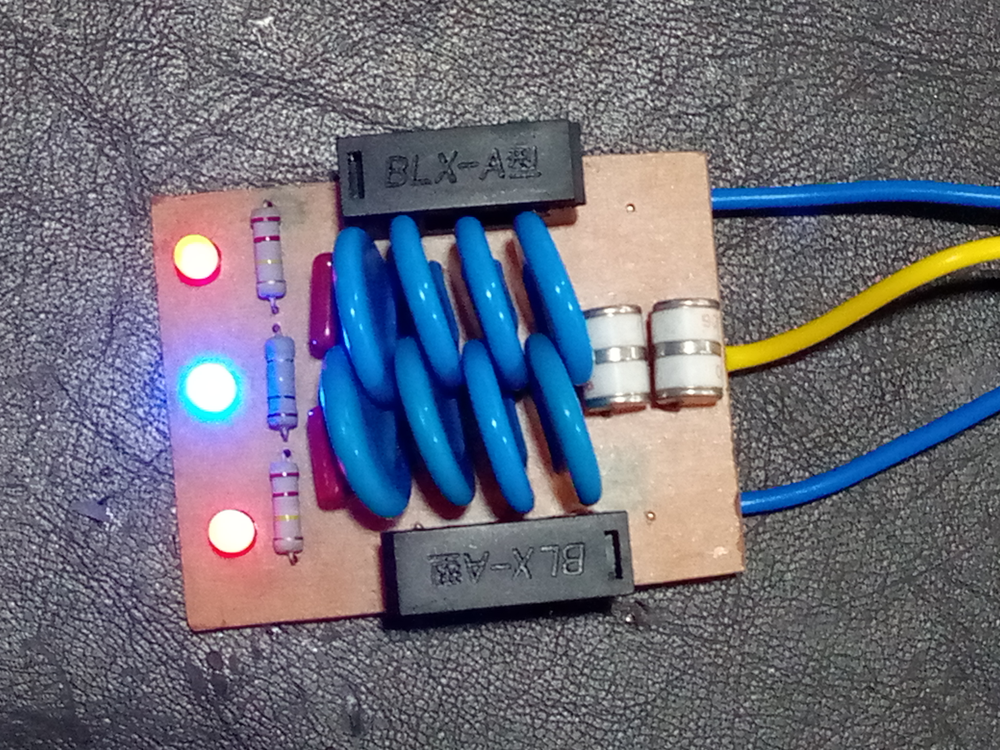
Surge Protection System
2024Surge Protection System is an electronic protection project that I personally designed and developed to help protect electrical and electronic equipment from sudden and temporary increases in supply voltage.
Read more
Surge Protection System is an electronic protection project that I personally designed and developed to help protect electrical and electronic equipment from sudden and temporary increases in supply voltage. The main purpose of this project is to reduce the effect of voltage surges and transients that can potentially damage sensitive electronic components and connected equipment. The system is designed using suitable **surge protection components, voltage sensing, protection circuits, switching components, and electronic control techniques**. When an abnormal voltage transient or surge occurs, the protection section responds to limit or divert the excessive voltage away from the connected load, depending on the protection method used in the design. This helps improve the safety and reliability of the equipment connected to the system. I personally worked on the circuit design, component selection, protection-stage configuration, assembly, testing, and troubleshooting** of the project. Through this development process, I gained practical knowledge of **power protection circuits, transient voltage protection, electronic component protection, relay and switching circuits, circuit testing, and electrical safety considerations**. The project demonstrates my ability to identify a practical electrical protection requirement and develop an electronic solution around it. It can be applied as a protection stage for various electronic systems, power supplies, communication equipment, and other sensitive electrical loads. The system can be further enhanced by integrating **over-voltage and under-voltage protection, thermal protection, overload protection, status indicators, automatic isolation, voltage monitoring, and IoT-based fault notifications**. These improvements could create a more comprehensive protection system for modern electronic and electrical equipment.
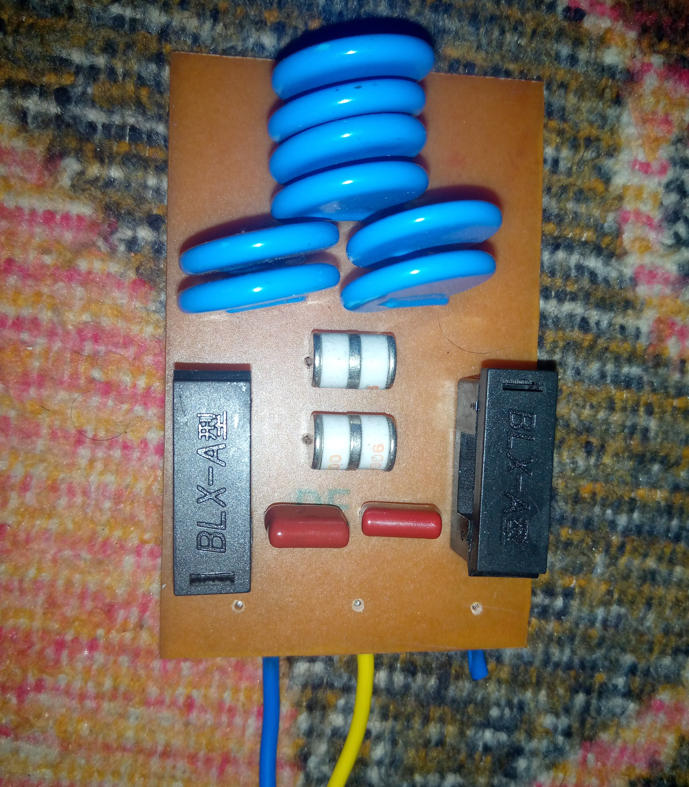
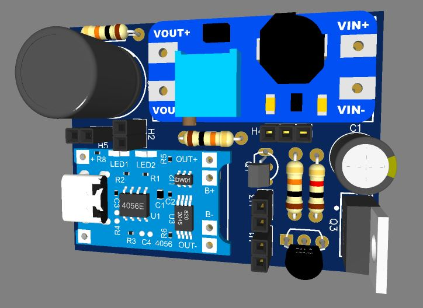
automatic backup lighting system
2026Emergency Bulb is an automatic backup lighting system that I personally designed and developed to provide continuous illumination during a power failure.
Read more
Emergency Bulb is an automatic backup lighting system that I personally designed and developed to provide continuous illumination during a power failure. The main purpose of this project is to ensure that a light source remains available when the main electricity supply is interrupted, making it useful for homes, offices, workshops, and other environments where emergency lighting is required. The system is designed with a rechargeable battery, LED lighting circuit, charging section, power detection circuit, and automatic switching mechanism**. Under normal conditions, the system operates from the main power supply while charging the internal battery. When the main power is interrupted, the control circuit automatically detects the supply failure and switches the LED light to battery power. When the main supply is restored, the system returns to its normal operating condition and the battery can be recharged for the next power interruption. I personally worked on the circuit design, LED driver section, battery charging circuit, automatic changeover mechanism, component selection, assembly, testing, and troubleshooting**. This project provided practical experience in **battery-powered electronics, LED circuits, power management, automatic switching, circuit protection, and embedded/electronic system design**. The project demonstrates my ability to develop a simple and useful electronic solution for a real-world requirement. It can be further improved by adding battery-level indication, automatic brightness control, overcharge and deep-discharge protection, multiple LED modes, USB charging, solar charging, and smart monitoring features.
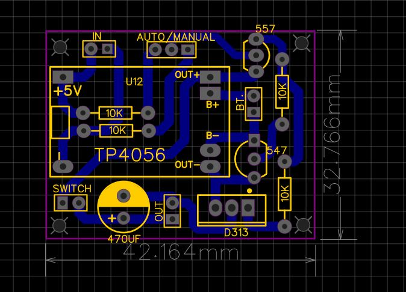
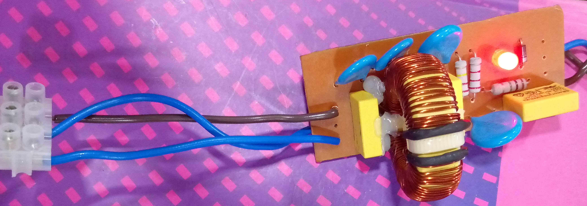
Surge Protection System for Household Equipment
2024Surge Protection System for Household Equipment is a protection system that I personally designed and developed to help protect household electrical and electronic appliances from sudden voltage surges and transient overvoltage conditions.
Read more
Surge Protection System for Household Equipment is a protection system that I personally designed and developed to help protect household electrical and electronic appliances from sudden voltage surges and transient overvoltage conditions. The main purpose of this project is to provide an additional layer of protection for sensitive equipment such as televisions, computers, refrigerators, audio systems, LED TVs, chargers, and other electronic appliances. The system is designed to monitor the incoming electrical supply and respond to sudden abnormal voltage conditions. The protection circuit uses suitable surge protection and switching components to limit or divert excessive transient voltage, helping to reduce the possibility of damage to connected equipment. The design focuses on providing a practical protection solution that can be incorporated into household electrical applications. I personally worked on the circuit design, component selection, protection-stage development, wiring, assembly, testing, and troubleshooting** of the system. Through this project, I gained practical experience in **power protection circuits, transient voltage protection, AC supply monitoring, relay-based switching, electronic component protection, and electrical safety. This project demonstrates my ability to develop practical electronic solutions for everyday electrical problems. It can be further enhanced by integrating over-voltage and under-voltage protection, overload protection, thermal protection, automatic power isolation, status indication, voltage monitoring, and fault notification features. These improvements can make the system a more comprehensive protection unit for modern household electrical and electronic equipment.
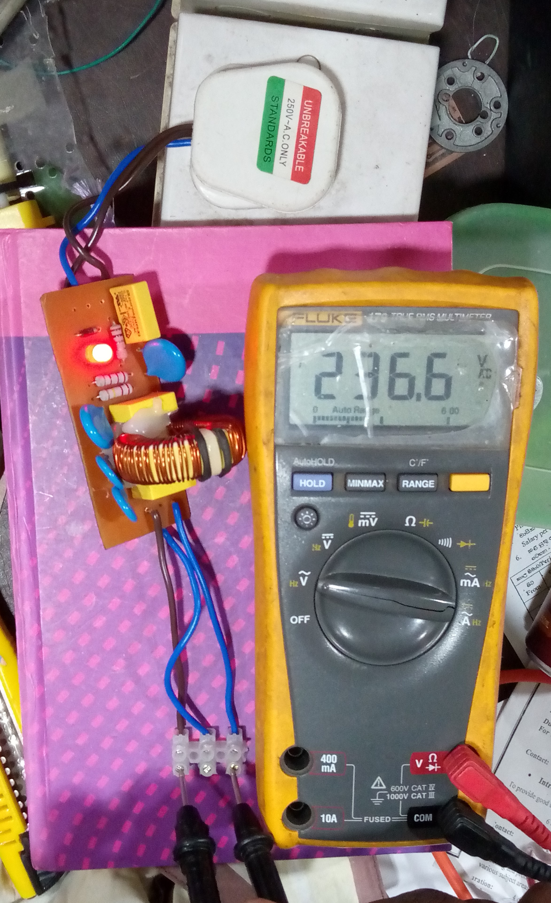
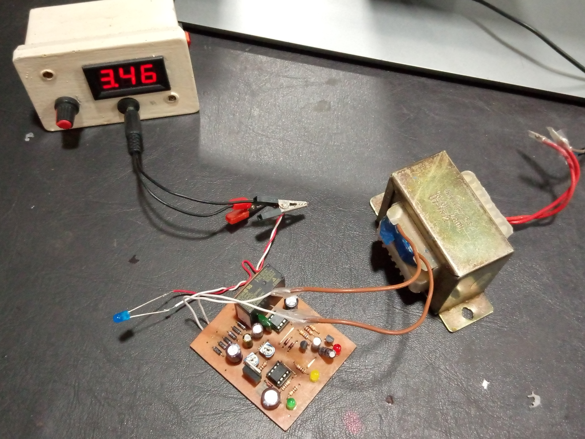
Power Guard
2025Power Guard is a household power protection system that I personally designed and developed to protect electrical and electronic appliances from common power supply abnormalities.
Read more
Power Guard is a household power protection system that I personally designed and developed to protect electrical and electronic appliances from common power supply abnormalities. The system is designed to monitor the incoming AC supply and provide protection against conditions such as over-voltage, under-voltage, voltage fluctuations, and sudden power disturbances. The main objective of Power Guard is to improve the safety and reliability of household equipment by preventing unsuitable supply conditions from directly reaching sensitive appliances. The system incorporates a combination of voltage sensing, control circuitry, relay-based switching, protection components, and power management techniques to control the connection between the electrical supply and the connected load. I personally worked on the circuit design, component selection, control section, relay switching mechanism, wiring, assembly, testing, and troubleshooting of the system. Developing this project provided me with practical experience in AC voltage monitoring, electronic protection circuits, relay control, power electronics, circuit design, and electrical safety. Power Guard can be used as an additional protection stage for household equipment such as televisions, computers, refrigerators, audio systems, lighting systems, chargers, and other sensitive electronic devices. The project demonstrates my ability to identify practical electrical problems and develop an electronic solution using a combination of hardware and control technologies. The system can be further enhanced with digital voltage and current displays, adjustable protection limits, overload and short-circuit protection, surge protection, time-delay restart, thermal protection, event logging, and IoT-based monitoring and notifications, making it a more advanced smart household power protection system.
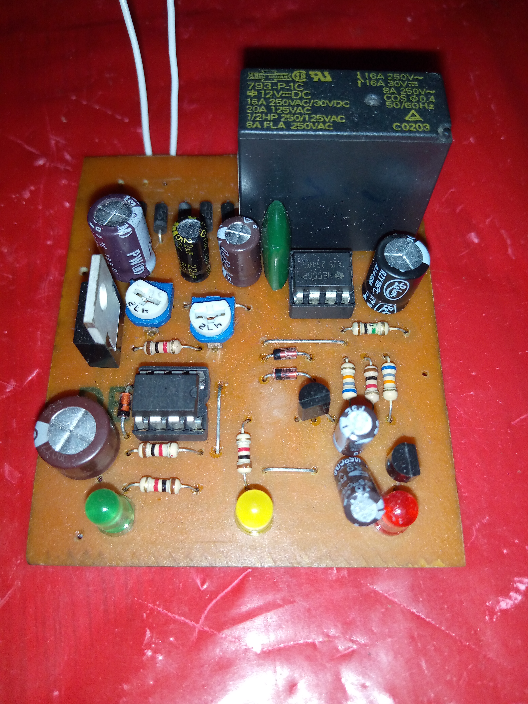

Remote Controlled AC Switch
2026Remote Controlled AC Switch is an electronic switching system that I personally designed and developed to control AC-powered electrical appliances remotely.
Read more
Remote Controlled AC Switch is an electronic switching system that I personally designed and developed to control AC-powered electrical appliances remotely. The main objective of this project is to provide a convenient and practical method of switching household electrical loads ON and OFF without directly operating a conventional wall switch. The system combines a remote control interface, receiver circuit, control electronics, and relay-based AC switching section. When a command is received from the remote controller, the control circuit processes the signal and activates or deactivates the relay, allowing the connected AC load to be switched accordingly. The relay provides electrical isolation between the low-voltage control circuit and the AC load section. I personally worked on the circuit design, remote signal receiving section, control logic, relay driver circuit, AC switching stage, component selection, assembly, testing, and troubleshooting. Through this project, I gained practical experience in **remote control systems, digital signal processing, relay control, AC load switching, electronic circuit design, and electrical safety. The system can be used to control household appliances such as lights, fans, lamps, and other suitable AC-powered devices. It can also be further developed by adding multiple channels, timer functions, status indicators, wireless communication, smartphone control, voice control, and IoT connectivity, creating a more advanced smart home automation system.
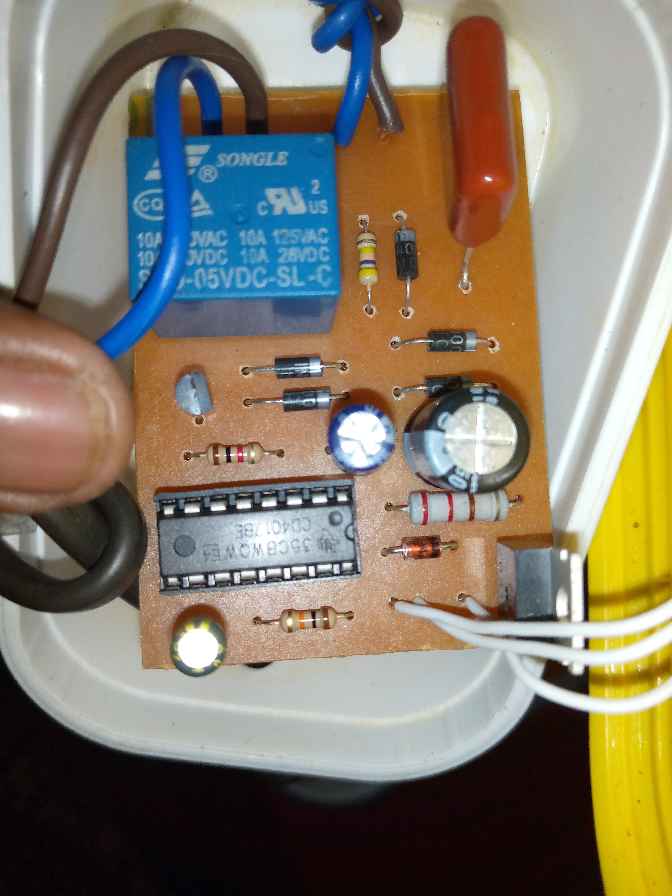
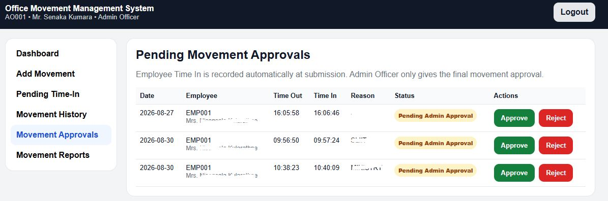
Office Movement Management System
2026Office Movement Management System is a web-based office management solution that I personally designed and developed to digitally manage and record employee movements during office hours.
Read more
Office Movement Management System is a web-based office management solution that I personally designed and developed to digitally manage and record employee movements during office hours. The main objective of the system is to replace manual movement registers with a structured digital system that makes employee movement records easier to enter, monitor, approve, and review. The system allows employees to record their Time Out, Reason for Leaving, and Time In electronically. The system automatically captures the relevant time information and maintains the movement status, allowing authorized administrative staff to monitor pending movements and manage the approval process. I developed the system using Google Apps Script, Google Sheets, HTML, CSS, and JavaScript, combining a web-based user interface with a structured backend database. The system includes employee login, role-based dashboards, movement recording, automatic time capture, pending movement tracking, administrative approval, employee-wise reports, and All Employees reports. I personally worked on the system architecture, user interface design, database structure, authentication, movement workflow, automatic time functions, reporting features, role-based access, testing, and troubleshooting. This project provided practical experience in web application development, database management, workflow automation, user authentication, and office process digitalization. The system demonstrates how a manual administrative process can be transformed into a simple and efficient digital workflow. It can be further enhanced with mobile-friendly interfaces, notifications, advanced analytics, attendance integration, QR-based movement recording, and cloud-based reporting.
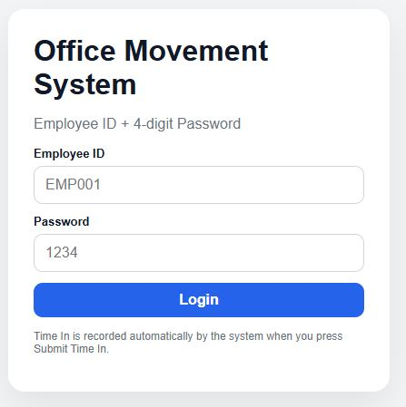
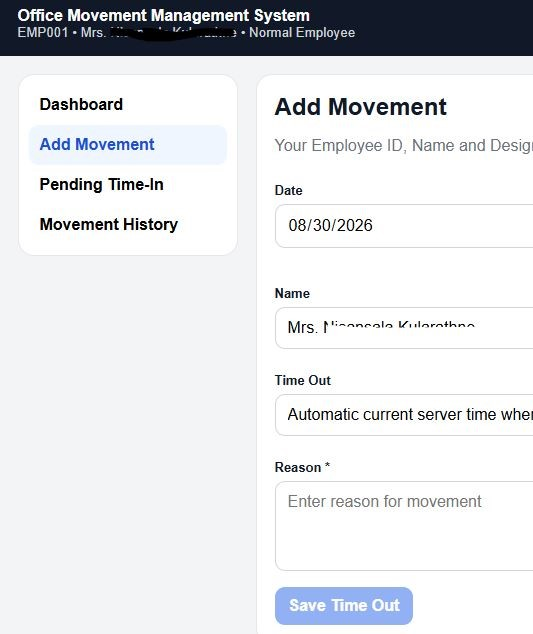
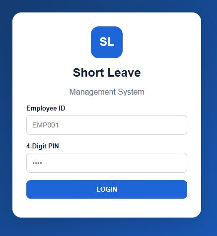
Short Leave Management System
2026Short Leave Management System is a web-based office management solution that I personally designed and developed to digitally manage employee short-leave requests during working hours.
Read more
Short Leave Management System is a web-based office management solution that I personally designed and developed to digitally manage employee short-leave requests during working hours. The system is designed to reduce manual paperwork and provide a structured method for applying, reviewing, approving, and monitoring short-leave records. The system manages both Morning Short Leave and Afternoon Short Leave based on the employee’s working time and applicable short-leave conditions. Employees can submit their short-leave requests with the required information, while the system calculates and manages the relevant leave period according to the configured office working hours. I developed the system using Google Apps Script, Google Sheets, HTML, CSS, and JavaScript, integrating the user interface with a cloud-based data management system. The system includes employee login, role-based dashboards, short-leave application, automatic time calculation, approval workflow, leave status tracking, and administrative reporting. I personally worked on the system architecture, user interface, database structure, authentication, time calculation logic, approval workflow, reporting functions, role-based access, testing, and troubleshooting. This project strengthened my practical knowledge of web application development, workflow automation, database management, JavaScript programming, and office process digitalization. The system can be further enhanced with email notifications, mobile-responsive access, automated monthly reports, attendance integration, leave balance management, analytics dashboards, and advanced administrative controls, making it a comprehensive digital solution for managing short-leave processes in an organization.
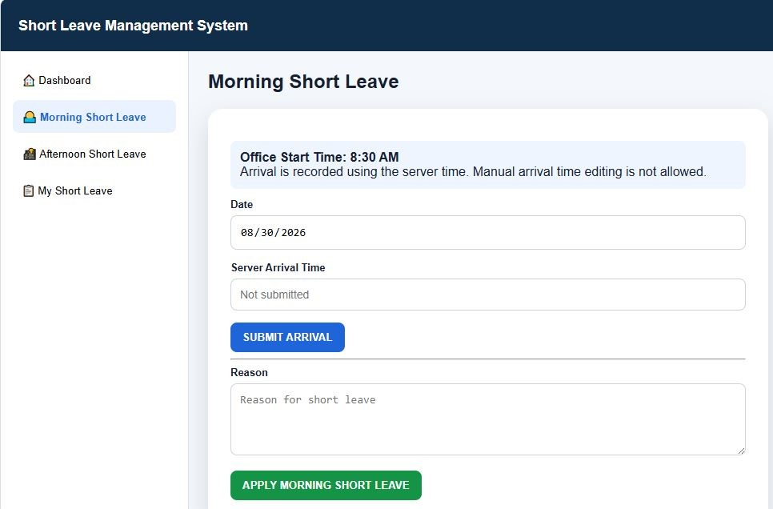
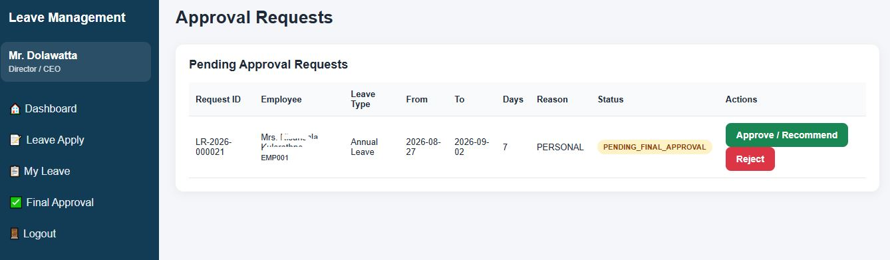
Leave Management System
2026Leave Management System is a web-based office management solution that I personally designed and developed to digitally manage employee leave applications, approvals, and records.
Read more
Leave Management System is a web-based office management solution that I personally designed and developed to digitally manage employee leave applications, approvals, and records. The main objective of this system is to replace traditional manual leave processes with a structured digital workflow that improves efficiency, reduces paperwork, and makes leave information easier to manage and track. The system allows employees to submit leave applications by selecting the leave type, required dates, and reason, while authorized officers can review, approve, or reject applications according to the organization's approval workflow. Different user roles are supported, allowing the system to manage leave requests through the appropriate administrative levels. I developed the system using Google Apps Script, Google Sheets, HTML, CSS, and JavaScript, combining a web-based interface with cloud-based data storage. The system includes secure employee login, role-based dashboards, leave application, approval and rejection functions, application status tracking, employee leave records, and administrative reporting. I personally worked on the system architecture, database design, user interface, authentication, role-based access control, approval workflow, leave calculations, reporting functions, testing, and troubleshooting. This project provided practical experience in web application development, database management, workflow automation, JavaScript programming, and digital office management. The system can be further enhanced with automated email notifications, leave balance calculation, attendance integration, mobile-responsive access, calendar-based leave visualization, advanced analytics, and automated monthly or yearly reports, making it a comprehensive digital leave administration solution for organizations.
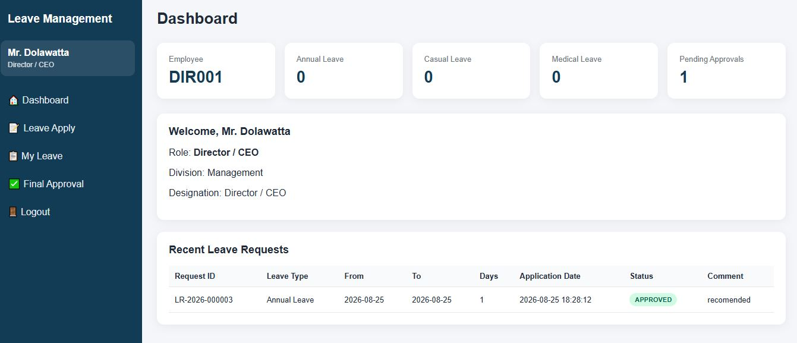